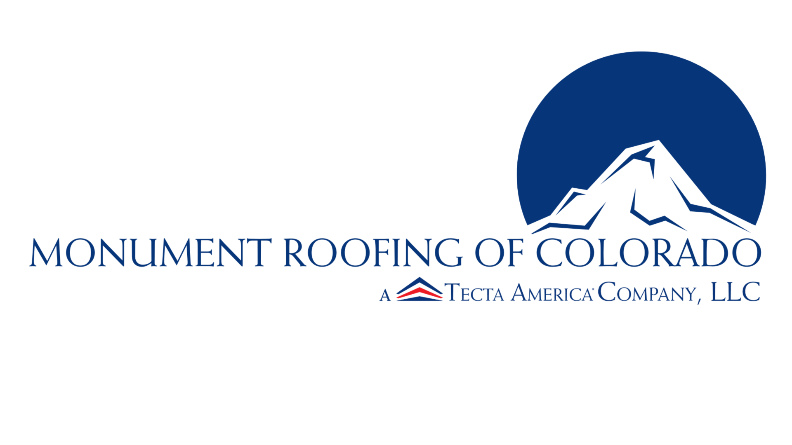

Serving Colorado’s Commercial Roofers with Union Pride
Join the Roofers Apprenticeship InfoRoofers Local 58 Members and their families are invited to our annual Summer BBQ. Join us for an afternoon of food, refreshments, games, raffles, and fellowship with your fellow Brothers and Sisters.
✔ Free food, sides, and drinks
✔ Raffle prizes and a 50/50 cash drawing
✔ Music, games, and family activities
✔ One free raffle-prize ticket for every attendee upon arrival
✔ Additional raffle tickets: 1 for $2 or 15 for $20
✔ 50/50 tickets: 1 for $1, 15 for $10, or 40 for $20
Bring the family and join us for great food, raffle prizes, music, games, and Union brotherhood.

Membership Meetings are held on the 2nd Monday of every month at the Union Hall beginning at 7:30 PM.
Members who attend may be entered into a raffle for a chance to win Rocky Mountain Vibes tickets.
Summer is in full effect, and several of our signatory contractors throughout the Colorado Springs area are looking for skilled Roofers and apprentices.
Members who are out of work—or who know someone interested in a career in commercial roofing—should contact the Business Manager to learn more about current opportunities and the Recruitment and Retention Program.
Contact the Business ManagerRoofers Local 58 is a proud affiliate of the United Union of Roofers, Waterproofers, and Allied Workers, dedicated to representing skilled tradespeople throughout Colorado and portions of Wyoming.
Our members specialize in commercial and industrial roofing, waterproofing, sheet metal work, and other essential building trades that help keep businesses, schools, hospitals, and public facilities protected throughout our jurisdiction.
Local 58 is committed to providing safe working conditions, fair wages, quality benefits, retirement security, and ongoing training opportunities for our members. Through collective bargaining agreements and industry partnerships, we help ensure roofing professionals are able to build long-term careers while maintaining high standards of craftsmanship and professionalism.
Our organization works closely with signatory contractors to supply skilled manpower, support apprenticeship development, and promote a highly trained workforce capable of handling modern commercial roofing systems including TPO, PVC, EPDM, modified bitumen, waterproofing, and sheet metal applications.
Whether you're an experienced tradesperson looking to advance your career or someone interested in entering the roofing industry for the first time, Roofers Local 58 provides access to apprenticeship training, career pathways, safety education, and a strong union brotherhood built on professionalism, hard work, and pride in the trade.
Roofers Local 58 offers a 3-year apprenticeship program designed to help individuals build a long-term career in the commercial roofing industry. No prior roofing experience is required to apply.
| Contractor | Starting Wage | Benefits |
|---|---|---|
| Monument Roofing of Colorado/Jamar | $21.48/hr | $5.98/hr |
| Central States Roofing | $22.05/hr | $5.79/hr |
Apprentices receive raises every 6 months based on attendance, classroom participation, job performance, and completion of monthly reports.
Apprenticeship training includes OSHA 10 Construction Safety certification, hands-on field experience, classroom instruction, and exposure to multiple commercial roofing systems including TPO, PVC, EPDM, modified bitumen, waterproofing, and sheet metal applications.
Apprentices also gain access to high-demand jobs throughout Colorado and Wyoming—especially for individuals eligible to work on military bases and correctional facilities.
Benefits include healthcare coverage, retirement contributions, and long-term career opportunities with signatory union contractors.
Apply NowAre you a roofing contractor looking to grow your business, attract skilled labor, and stay competitive in today’s market? Becoming a signatory contractor with Roofers Local 58 gives your company access to a trained workforce, apprenticeship pipeline, industry safety standards, and long-term labor stability.
Local 58 works directly with contractors throughout Colorado and portions of Wyoming to help staff projects with skilled commercial roofers trained in modern roofing systems including TPO, PVC, EPDM, modified bitumen, waterproofing, and sheet metal applications.
Our apprenticeship program helps develop the next generation of roofers through hands-on field training, classroom instruction, OSHA safety certification, and continuing education opportunities. Apprentices are registered with the State of Colorado and can be utilized on prevailing wage projects.
Local 58 contractors maintain full control of their businesses. Our role is to help provide manpower, training resources, labor stability, and support when needed. Existing employees can remain with your company and become members of the union with waived initiation fees for current workers.
Whether your company is looking to expand, improve workforce retention, meet prevailing wage requirements, or strengthen training and safety standards, Roofers Local 58 is ready to help your business succeed.


📍 1115 Valley St., Colorado Springs, CO 80915
Visit WebsiteWe serve the entire state of Colorado and the following Wyoming counties: Albany, Converse, Goshen, Laramie, Natrona, Niobrara, and Platte.
Ray Gallegos Jr, Business Manager
📍 404 N. Spruce St., Colorado Springs, CO 80905